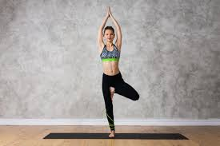
Vrikshasana, also known as the Tree Pose, is a classic standing yoga posture that symbolizes balance, stability, and rootedness, much like a tree. It helps in strengthening the legs, improving focus, and enhancing overall body balance.
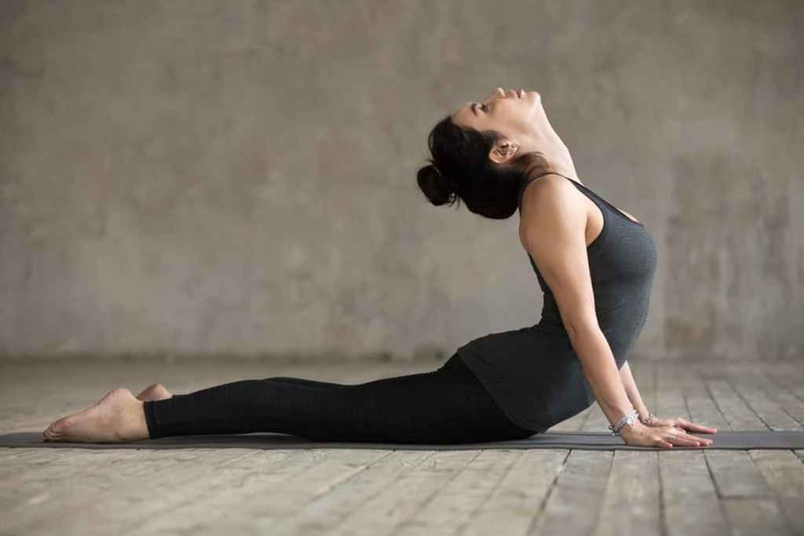
Bhujangasana, or Cobra Pose, is a rejuvenating backbend in yoga that mimics the posture of a cobra with its hood raised. It is part of the traditional Surya Namaskar (Sun Salutation) sequence and is known for its therapeutic benefits for the spine and mental health.
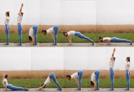
Surya Namaskar, or Sun Salutation, is a dynamic sequence of 12 yoga poses performed in a flowing sequence to offer gratitude to the sun, the source of life and energy. It combines asanas, pranayama (breathing), and meditation, making it a holistic practice for the body, mind, and soul.
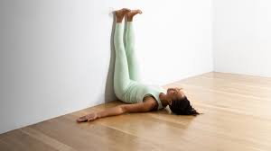
Viparita Karani, or Legs Up the Wall Pose, is a restorative yoga posture that promotes relaxation, improves circulation, and rejuvenates the mind and body. It is a gentle inversion that is accessible to practitioners of all levels.
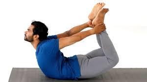
Dhanurasana, or Bow Pose, is a deep backbend that resembles a stretched bow, with the body forming the curve and the arms acting as the bowstring. This dynamic pose strengthens the spine, stimulates digestion, and boosts energy levels.
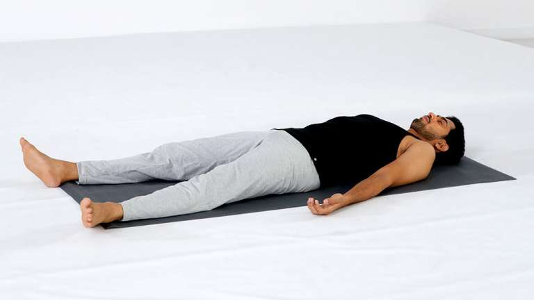
Savasana, or Corpse Pose, is a restorative yoga posture often practiced at the end of a session to promote deep relaxation and integrate the benefits of the preceding poses. Despite its simplicity, it is a profound practice for calming the mind and rejuvenating the body.
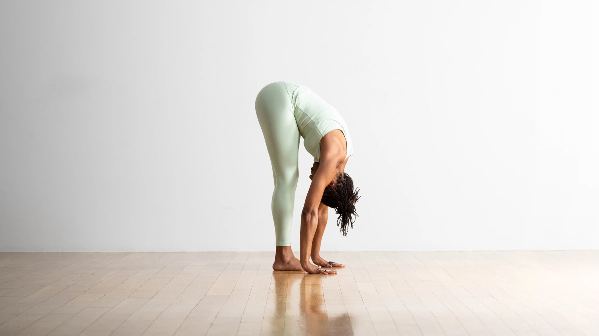
Uttanasana, or Standing Forward Fold, is a foundational yoga pose that involves bending forward from the hips and allowing the upper body to hang over the legs. This pose deeply stretches the hamstrings and spine while promoting relaxation and introspection.
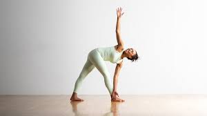
Trikonasana, or Triangle Pose, is a classic standing yoga posture that strengthens and stretches the entire body. Named after the triangular shape formed by the pose, Trikonasana enhances stability, flexibility, and focus.
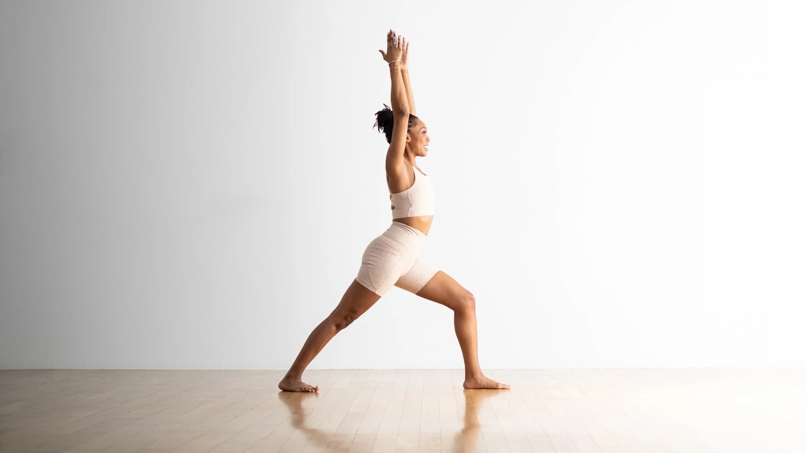
Virabhadrasana, or Warrior Pose, is a dynamic and empowering standing yoga posture that builds strength, stability, and focus. It is named after the mythical warrior Virabhadra and symbolizes courage and determination.
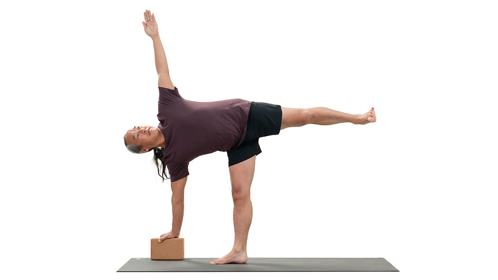
Ardha Chandrasana, or Half Moon Pose, is a standing balance pose that combines strength, stability, and grace. The posture resembles a crescent moon and challenges both physical and mental equilibrium while enhancing flexibility and focus.
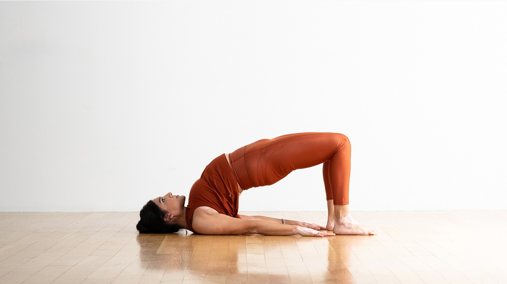
Setu Bandha Sarvangasana, or Bridge Pose, is a gentle backbend that stretches the chest, spine, and hips while strengthening the legs, glutes, and lower back. This pose is often used as a preparatory posture for deeper backbends and is beneficial for both restorative and active yoga practices.
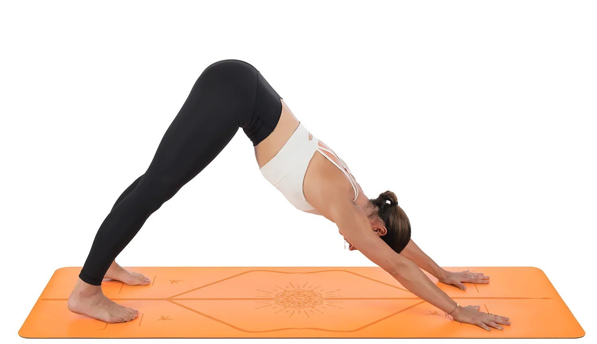
Adho Mukha Svanasana, or Downward-Facing Dog, is one of the most recognizable and foundational yoga poses. It is an inverted V-shape that stretches and strengthens the entire body, promoting flexibility, circulation, and a sense of grounding. This pose is often used as a transitional pose between other asanas in a flow.